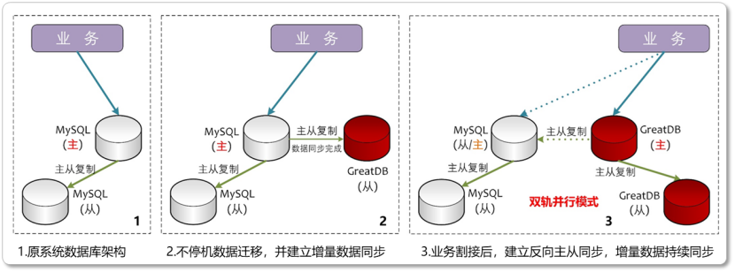
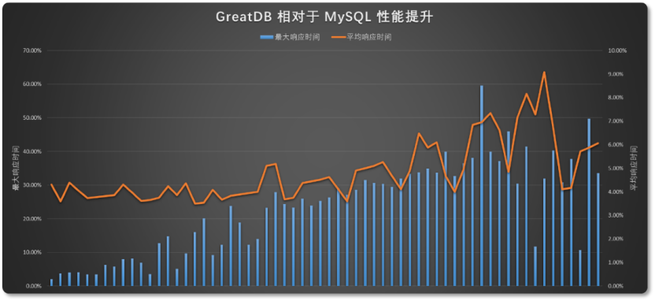

解决方案 | 6周极速换“心”！GreatDB无缝替换MySQL 0宕机+数据0丢失的国产升级之道
前言
随着近几年国际形势变化，某运营商积极响应国家自主可控战略要求，在下辖各省公司和专业公司大力推进
BOM域系统的数据库国产替代工作。
M域作为全集团OA办公、经营管理和综合服务的基础底座，具备业务系统多、替换数量大、业务连续性要求高、
用户感知明显等特点。如何丝滑完成数据库国产化替代，提升数据库安全性的同时保障业务系统平滑过渡且
替换后用户感知最低，是客户的核心诉求。
2024年10月，某运营商公司启动相关业务系统的数据库替代工作，需在年底完成16个数据库实例的国产替代，
涉及MOA、公文快文、协同办公平台、产品研发等公司日常运营的多套核心工作流业务平台，日常用户多达
2000+人，因此要求替换后的国产数据库满足：
1、业务0中断
切换过程中，业务系统工作日需全程在线，保障运行连续性；
2、数据0丢失
缩短数据迁移窗口期，实现快速迁移，迁移前后保障数据一致性，通过100%验证；
3、快速回退
支持源数据库和国产数据库双轨并行，增量数据实时同步，业务系统具备随时切换回MySQL源数据库的能力；
4、性能不降低
在硬件配置与MySQL源数据库一致的条件下，国产数据库替换后需具备与源数据库相当或更高的性能。
一、GreatDB四大核心优势 全面满足客户需求
1. 高度兼容，丝滑迁移
MySQL生态全兼容：GreatDB与MySQL数据库可实现100%兼容，对业务系统几乎做到了“0改造”，迁移后
仍能使用原有SQL语句、接口驱动及第三方运维工具（如Navicat、MyCa等），极大降低了改造难度和时间
成本；
业务系统微调适配：GreatDB作为首批通过安全可靠测评的集中式数据库，在数据库安全及中文支持方面做了
大量优化，使业务系统改造量极低，仅涉及必要的密码插件、字符集等配置调整，8套业务系统在1周内全部
完成了系统适配；
降本增效，TCO大幅降低：
GreatDB的高度兼容性让开发及运维团队可完全沿用原MySQL的开发运维习惯
及第三方工具，极大降低了开发、运维的学习成本，减少了更新知识体系带来的风险，大幅降低总体拥有成本。
2.双轨同步，闪电回退
双向主从复制：GreatDB与MySQL高度兼容，可以互为主备。借助这一特性，客户可以从容搭建全栈国产化
硬件环境，完成GreatDB数据库安装，并在系统迁移前通过MySQL→GreatDB同步，迁移后配置GreatDB
→MySQL反向同步，实现业务增量数据的实时备份，保障业务高度连续运行；
业务0感知：通过上述双轨同步方案，可使数据库源库和GreatDB目标库的数据随时保持一致，业务系统也时刻
在线，割接窗口仅需预留分钟级停服。割接完成后，通过反向同步保证增量数据实时同步到源数据库，业务系统
随时可以实施一键回滚。

▲图1-双轨并行 实现数据无缝迁移
3. 性能最高提升60%
同等硬件性能最高提升60%：性能方面，GreatDB平均响应时间较MySQL降低4%-10%，最大响应时间
降低20%-60%。用户体验感知方面同样明显，数据库替代完成后，公司用户反馈，页面响应速度明显快于
替换之前。

▲图2-客户业务系统迁移前后测试数据对比
4. 全栈国产化适配
GreatDB对通过安全可靠测评清单的所有操作系统、CPU及服务器均实现了适配互认证，不仅满足了全栈
国产化替代的信创要求，还能继续兼容原有MySQL生态绝大部分第三方工具，让开发、运维团队保持原有
开发、维护习惯，极大降低了学习成本和知识体系改动造成的风险。
02高效实施：6周极速交付的秘诀
1. 倒排工期，精准管控
每日进度看板：万里数据库项目交付团队配合客户侧建立了可视化在线进度文档，实时跟踪8套系统迁移状态，
做到当日问题当日闭环解决。
并行测试：虽然时间紧任务重，但项目团队仍然确保每套系统在测试环境中完成数据迁移模拟、应用割接演练、
反向同步双轨并行、业务代码兼容性适配测试、业务性能压测对比等关键测试项目，方可进行割接。
2. 风险前置，全程可控
三层数据保险：确保国产替代过程中的业务数据安全和一致性
迁移前：通过源数据库在线备份+主从同步，在保障数据迁移高效完成的基础上，确保数据迁移的安全性；
迁移中：提供图形化工具GreatDTS+命令行等一致性校验工具，在迁移过程中高效完成数据比对；
迁移后：GreatDB与MySQL主从同步并行，增量数据实时同步，在较长时间段内保持可随时回滚的能力。
3. 智能运维，降本增效
图形化运维平台GreatADM：GreatADM在迁移前后可同时纳管MySQL与GreatDB，极大提升DBA运维效率，
该能力尤其适合替换过程中MySQL数据库和GreatDB大量并存的业务场景。
03成果与价值
6周快速交付
该项目于12月中旬分两批完成割接交付，提前2周完成8大系统、16套数据库的全部替代工作，且割接前后完成
了源数据库全套基线数据测试和国产数据库的全套业务测试，提前并超额达成客户诉求；
故障运行
割接后系统运行稳定，帮助客户业务系统经受住了元旦、春节双节营销时高并发场景、平台流量峰值的考验。
截至目前，各系统已双轨并行1个半月，增量数据仍可稳定同步到源数据库，始终保持稳定运行。